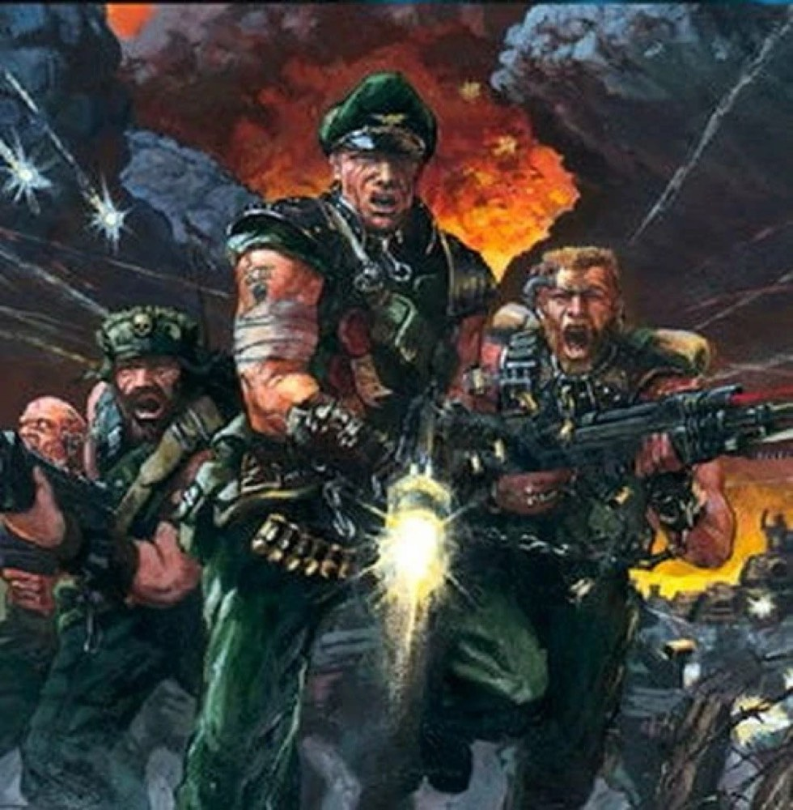

Penal Legion
| Penal Legions | |
|---|---|
 A penal legionnaire with his explosive collar, from a Munitorum training slate Artwork © Games Workshop | |
| Branch | Astra Militarum |
| Type | Penal infantry; forlorn hopes and suicide troops |
| Earliest records | Early M32, after the Time of Rebirth (estimated) |
| Recruited from | Condemned criminals, deserters, disgraced soldiers, heretics judged redeemable |
| Supervision | Penal custodians; commissars of the Officio Prefectus |
| Identifying mark | The explosive penal collar |
| Notable units | 13th Penal Legion, the "Last Chancers" (late M41) |
A Penal Legion is a formation of the Astra Militarum made up of condemned criminals, deserters and disgraced soldiers. Its members, called penal legionnaires or penal troopers, have been sentenced to death or to a lifetime of punishment and given instead the chance to redeem themselves by fighting for the Emperor. They are sent where the fighting is most dangerous and their lives worth least: across minefields, into the breach of a fortress, or as diversions for other attacks.[1][2]
Penal legionnaires are controlled by fear. Most wear an explosive collar that their custodians can detonate if they disobey or flee, and they are watched over by commissars with the authority to execute them on the spot. Few survive long, but those who do may, in theory, be pardoned. The best known of all penal units is the 13th Penal Legion, called the "Last Chancers", of the late 41st millennium.[1]
History
[edit]Condemned men fought in the armies of the Imperium from its earliest days, and records of the Great Crusade (798.M30 – 000.M31) mention punishment battalions in the Imperial Army. The penal legion as a distinct formation of the Astra Militarum is first clearly recorded in the generations after the Time of Rebirth, when the Imperial Guard took its present shape in the early 32nd millennium.[1][a]
Since then penal legions have fought in nearly every great war of the Imperium. The Departmento Munitorum numbers them like ordinary regiments, and on some worlds, notably hive worlds with large prison populations, a penal legion is raised as part of the regular Imperial tithe. In the Era Indomitus the losses of the Great Rift and the demands of the Indomitus Crusade have led the Munitorum to raise more penal legions than at any time in recorded history.[3]
Recruitment
[edit]Penal legionnaires come from many sources. Civil courts on many worlds sentence criminals to penal service in place of execution. Soldiers convicted by military courts of cowardice, insubordination or desertion may be transferred to a penal legion rather than shot. The Inquisition and the Ecclesiarchy sometimes commute sentences on lesser heretics, judged redeemable, to service in a penal legion. Survivors of units that have disgraced themselves have been sent into penal service together.[2]
The Imperial Infantryman's Uplifting Primer reminds soldiers that "the penal trooper has been given a gift: the chance to die for the Emperor". In practice, a penal legion is often a mixture of murderers, thieves, political prisoners and soldiers broken by war, and many of its members are not in their right minds.[2]

Organisation
[edit]Command and discipline
[edit]A penal legion is commanded by officers known as penal custodians, appointed by the Munitorum or by the Officio Prefectus, and by commissars. Legionnaires are given no rank of their own, and in most legions are known only by number. The custodians hold the detonators of the legionnaires' explosive collars, and many legions also use pain-inducing implants or neural whips. A penal legionnaire who runs is killed, either by his own collar or by the guns of the troops behind him.[1]
Equipment
[edit]Penal legionnaires are issued the cheapest equipment available: old or repaired lasguns, knives, flak armour if any, and drab fatigues. Weapons are often handed out only immediately before battle and taken back afterwards. In assaults, some legions are issued with chain-blades and pistols, and some legionnaires have been sent forward as living bombs.[1]
Tactics
[edit]The tactical value of a penal legion is that it can be spent. It is used for frontal assaults on prepared positions, to clear minefields, to draw fire away from other troops and to hold positions to the last man. Commanders who have had to spend whole penal legions on a single objective regard it as an ordinary use of a formation created for that purpose.[1]
Redemption
[edit]A penal legionnaire who serves out a sentence, or performs an act of exceptional courage, may in principle be pardoned and returned to ordinary service or to civilian life. Few live long enough. Munitorum records suggest that most penal legions lose the great majority of their strength within a single campaign, and the term of service is often for life. Many legionnaires believe the promise of redemption to be a lie, and the custodians do little to correct them.[2][1]

The Last Chancers
[edit]The 13th Penal Legion, known as the Last Chancers, was a small penal unit commanded by Lieutenant Colonel Schaeffer in the late 41st millennium. Schaeffer, a ruthless officer believed to answer to the Inquisition, recruited his troops from condemned men and women across the Imperium, many of them among the most dangerous soldiers in its service. He promised them a pardon if they survived. The unit was used on missions of the greatest importance, on which almost all of its members died, and it was rebuilt again and again from new recruits. Its survivors were very few.[4][b]
Timeline
[edit]- 798.M30 – 000.M31: punishment battalions in the Imperial Army of the Great Crusade
- Early M32 (estimated): penal legions recorded as formations of the reorganised Imperial Guard after the Time of Rebirth
- Late M41: the 13th Penal Legion, the Last Chancers, under Colonel Schaeffer
- From c. 000.M42: penal legions raised in great numbers for the Indomitus Crusade
See also
[edit]Notes
[edit]References
[edit]- ^ a b c d e f g Last Chancers series (Novels) by Gav Thorpe. Counter, Ben. Soul Drinkers: Chapter War (novel). Black Library.
- ^ a b c d Codex: Imperial Guard (3rd Edition, 2nd Codex), pg. 60. Games Workshop. Codex Imperialis (2nd Edition), pg. 30. Games Workshop.
- ^ Citadel Journal 12, "Penal Legions," by Gavin Tyler, pp. 40-47. Warhammer 40,000: Compendium (2nd Edition), "The Imperial Guard - Penal Battalions," pp. 148, 159. Games Workshop.
- ^ Warhammer 40,000: Rogue Trader (1st Edition), pg. 166. Games Workshop. Chapter Approved - Third Book of the Astronomican (2003), pp. 25-27.